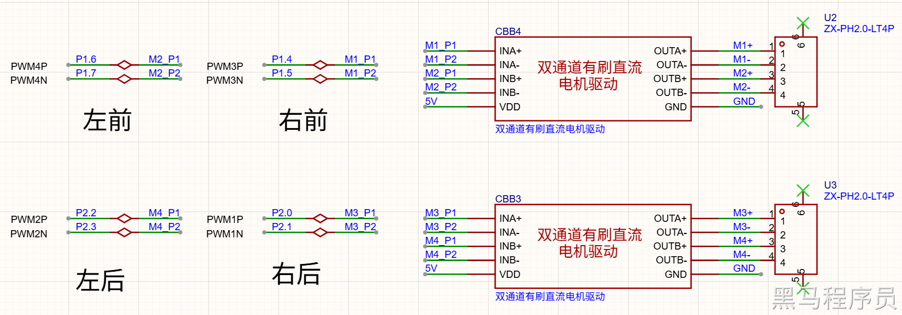

<!DOCTYPE lake>
<p data-lake-id="ub65d668a" id="ub65d668a"></p><h2 data-lake-id="Bb2EU" id="Bb2EU"><span data-lake-id="u0c369fb1" id="u0c369fb1">正反转驱动原理</span></h2><p data-lake-id="u9c09eae8" id="u9c09eae8"><span data-lake-id="ua32fff19" id="ua32fff19">利用单片机的两个PWM通道分别产生占空比互补的PWM方波，分别控制直流电机的两个方向旋转。注意这里使用的单片机自带的互补PWM引脚，你当然也可以选择两个独立的PWM引脚，自行输出相反的PWM方波。</span></p><p data-lake-id="u67ae49c8" id="u67ae49c8"><span data-lake-id="u90e9e466" id="u90e9e466">引脚选择参见：</span><a data-lake-id="u9548a9d2" href="../STC%E8%BF%9B%E9%98%B6%E5%BC%80%E5%8F%91/LED%E5%91%BC%E5%90%B8%E7%81%AF%28PWM%29%E2%AD%90%E2%AD%90.html" id="u9548a9d2"><span data-lake-id="u3821a0ee" id="u3821a0ee">LED呼吸灯(PWM)</span><span data-lake-id="u5c4360f6" id="u5c4360f6">⭐⭐</span></a></p><h3 data-lake-id="HVdeq" id="HVdeq"><span data-lake-id="u7a913c4a" id="u7a913c4a">硬件连接</span></h3><ol list="u311b49ce"><li data-lake-id="ua7afded0" fid="u2ff79636" id="ua7afded0"><span data-lake-id="ubd1d6cb6" id="ubd1d6cb6">单片机的两个PWM输出引脚接到电机驱动芯片的两个IN输入口</span></li><li data-lake-id="ue96f2c10" fid="u2ff79636" id="ue96f2c10"><span data-lake-id="uc23605e6" id="uc23605e6">将直流电机的两个电机端分别连接到电机驱动芯片两个对应的OUT输出口</span></li><li data-lake-id="u9c9cab5d" fid="u2ff79636" id="u9c9cab5d"><span data-lake-id="u3fb654ca" id="u3fb654ca">电机驱动芯片需要连接能够输出大电流的5V和GND，起到信号放大作用</span></li></ol><h3 data-lake-id="K7mPf" id="K7mPf"><span data-lake-id="u724e69bc" id="u724e69bc">软件编程</span></h3><p data-lake-id="u487038da" id="u487038da"><strong><span data-lake-id="uff4ee3bd" id="uff4ee3bd">分别配置引脚占空比：</span></strong></p><ul list="ud0787120"><li data-lake-id="u1aefcc42" fid="uce0c03de" id="u1aefcc42"><span data-lake-id="ued19b300" id="ued19b300">当PWM1占空比大于PWM2时，电机正转</span></li><li data-lake-id="ued4db399" fid="uce0c03de" id="ued4db399"><span data-lake-id="ub98a58fc" id="ub98a58fc">当PWM2占空比大于PWM1时，电机反转</span></li><li data-lake-id="ue538139a" fid="uce0c03de" id="ue538139a"><span data-lake-id="ude198fde" id="ude198fde">当两个PWM占空比相等时,电机停止</span></li></ul><p data-lake-id="u21219b9c" id="u21219b9c"><strong><span data-lake-id="u4eba1e0a" id="u4eba1e0a">互补PWM配置占空比：</span></strong></p><p data-lake-id="u6c157eb2" id="u6c157eb2"><span data-lake-id="uad044a58" id="uad044a58">我们用的是互补PWM，在模式1 (CCMRn_PWM_MODE1)和模式2 (CCMRn_PWM_MODE2)情况下，设置一个PWM占空比，会自动修改两个输出通道（P正极和N负极）的占空比，并且相互相反。进而实现分别配置两个引脚相同的效果。</span></p><p data-lake-id="u8372ed7b" id="u8372ed7b"><span data-lake-id="udcdb3376" id="udcdb3376">由于直流电机的正负极连接，安装方向均有不同。因而要根据每个轮子需要的正反转方向，给每个轮子分别配置MODE模式。以实现用相同占空比参数，控制车轮正转反转，实现前进或后退的目的。</span></p><h2 data-lake-id="LfYEF" id="LfYEF"><span data-lake-id="u82929bd5" id="u82929bd5">代码编写</span></h2><h3 data-lake-id="VE981" id="VE981"><span data-lake-id="u7ff4f88c" id="u7ff4f88c">声明头文件</span></h3><p data-lake-id="uef74d7a2" id="uef74d7a2"><span data-lake-id="udcd53b74" id="udcd53b74">声明头文件</span><code data-lake-id="ua95426b4" id="ua95426b4"><span data-lake-id="ub34ac1b0" id="ub34ac1b0">Motors.h</span></code><span data-lake-id="ufb6f5f8d" id="ufb6f5f8d">，并写入如下内容</span></p><span class="yuque-card-unsupported">[codeblock]</span><h3 data-lake-id="AuqCJ" id="AuqCJ"><span data-lake-id="u23960fca" id="u23960fca">实现c文件</span></h3><span class="yuque-card-unsupported">[codeblock]</span>